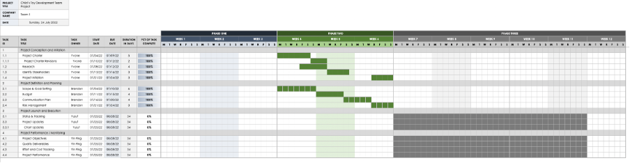

Review the NIST Privacy tools. How do these fit with the risk assessment methods and tools described in last week’s lecturecast?
According to the risk management process method described in last week’s lecturecast, the NIST Privacy tools is useful for identifying, evaluating the potentials privacy risks for the entire system. It is also beneficials on distinguishing the privacy risk and the compliance risk for the organization. We can tolerate and fix those identified risks and reuse the NIST Privacy tools to check it again. We can also repeat this cycle until the organization standing away from those risks.
Create a python program that implements one of the estimation methods covered in the lecturecast. You can use the Jupyter Notebook workspace in Codio and save your work to your GitHub repository.Implementation of using COCOMO Model for estimation
import sys import math def do_calculation_and_display_results(kloc, model): if model != 'organic' and model != 'semi_detached' and model != 'complex': print(f'Unsupported model: {model}') return a = 0 b = 0 c = 0 d = 0 if model == 'organic': a = 2.4 b = 1.05 c = 2.5 d = 0.38 elif model == 'semi_detached': a = 3.0 b = 1.12 c = 2.5 d = 0.35 else: a = 3.6 b = 1.20 c = 2.5 d = 0.32 effort = a * math.pow(kloc, b) dtime = c * math.pow(effort, d) staff = effort / dtime print(f'Estimated result using Cocomo model: {model}') print(f'{str(round(effort))} person-months') print(f'{str(round(dtime))} months') print(f'{str(round(staff))} person') if __name__ == '__main__': if len(sys.argv) < 3: print('Usage: ') print('python3 cocomo.py [KLOC] [model]') else: kloc = int(sys.argv[1]) model = sys.argv[2] do_calculation_and_display_results(kloc, model)
Estimated result using Cocomo model: organic
10745 person-months
85 months
126 person
Estimated result using Cocomo model: semi_detached
23523 person-months
85 months
278 person
Estimated result using Cocomo model: complex
53561 person-months
82 months
657 person
Based on the requirements you have gathered for your assignment, create an estimate of the total effort and time to complete the planned demonstration of your system.
Also, read the articles by Verner et al (2014) and Anton & Nucu (2020) and then answer the following questions:
The authors categories risks into major four themes: GSD outsourcing rationale, software development process, human resources, and project management. In the traditional SDLC model, we have requirement gathering, software development, software quality assurance, and software maintenance phases. The authors indicated potentials risks, and provided mitigations for these four phases when using the GSD method for implementing the solution.
I would use the expert judgement estimation method to capture and categorise the risks because it measures the Unadjusted Use Case Weight (UUCW) and Unadjusted Actor Weight, the technical complexity, and environment factors for the risks of the project. It covers not only on technical area, it also covers the non-technical area, such as the management level and cultural differences.